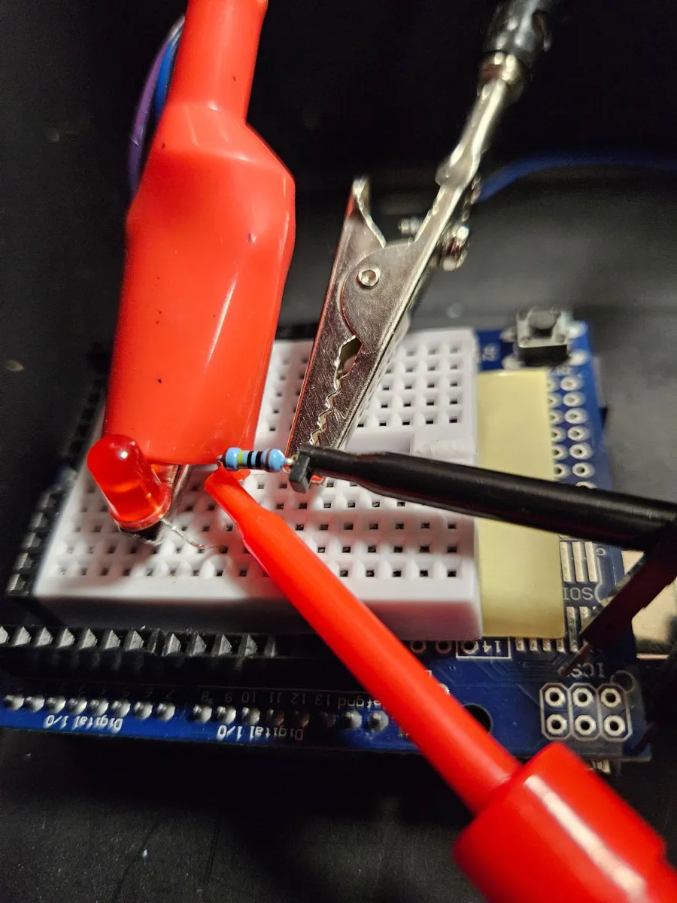
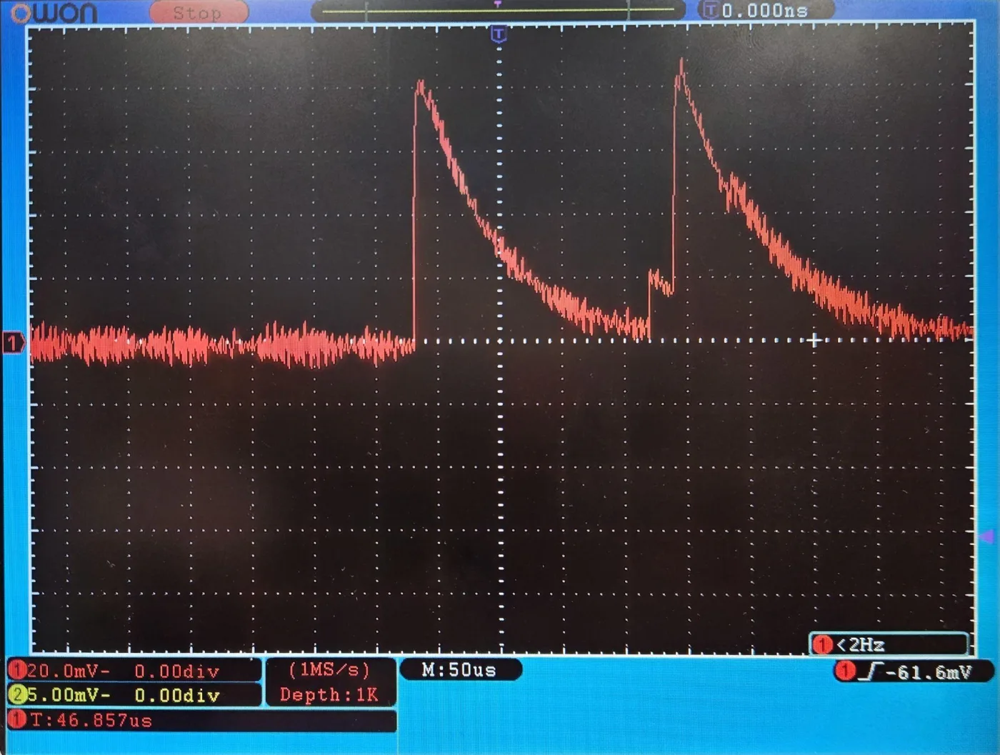
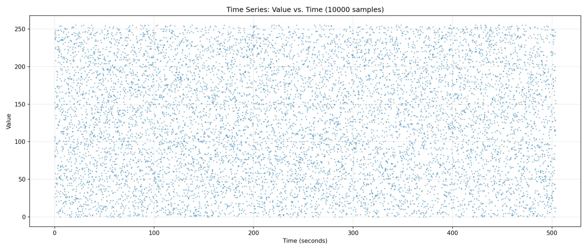

Most random numbers on a computer come from an algorithm: give it the same seed and you get the same output. We wanted randomness from physics instead, using light detection at the single-photon level, built from parts that cost a few dollars.
The detector
A single-photon avalanche detector (SPAD) is a diode biased past its breakdown voltage, known as Geiger mode. One photon creates an electron–hole pair, which sets off an avalanche of current. A quenching circuit then stops the avalanche, the diode recovers during a short dead time, and it is ready for the next photon.
An ordinary red LED can do this when it is reverse-biased. We used passive quenching: a 1 MΩ resistor in series with the LED, with the voltage across it read on the Arduino Uno’s analog pin A0. The circuit sat inside a black box to limit how much light reached it.

Seeing single photons
On the oscilloscope, each detected photon appears as a sharp pulse well above the noise floor that decays over roughly 150 µs. When a second photon arrives before the first pulse has fully decayed, its pulse rides on the first one’s tail. That is the detector’s dead time and pile-up made visible.

From pulses to bits
Photon arrivals are random, so the time between them is too. The Arduino firmware watches pin A0 and times the gap from the end of one pulse to the start of the next. It compares two gaps in a row to make one raw bit: 1 if the first gap is shorter, 0 if not.
Raw bits can still carry a bias, so the firmware applies Von Neumann debiasing. It takes raw bits in pairs and keeps a pair only when the two bits differ, discarding 00 and 11. Eight kept bits are packed into a byte and sent over serial. A second sketch logs each pulse’s duration and average height as CSV, which we used to look at the detector itself.

What we learned
An LED does work as a SPAD, though it is less effective than purpose-built detectors. It is still a cheap, hands-on route to a true random number generator driven by a quantum process rather than a seeded algorithm. The next step we proposed is active quenching, which would reset the detector faster and raise the count rate.
Using an LED as a single-photon detector is an established technique; we built on these sources:
- PhysicsOpenLab (2020). Using LED as a single photon detector.
- Newport, J. (2018). LEDs as single-photon avalanche photodiodes [Lab manual]. American University; AAPT BFY III Conference.
Team and tools
PH 250 project team
- Nels Buhrley
- Rex Wight
- Andrew Simmons
Presented November 11, 2025.